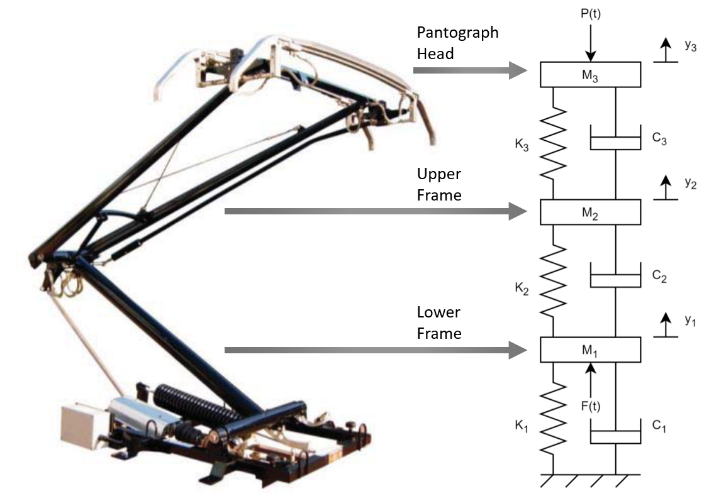
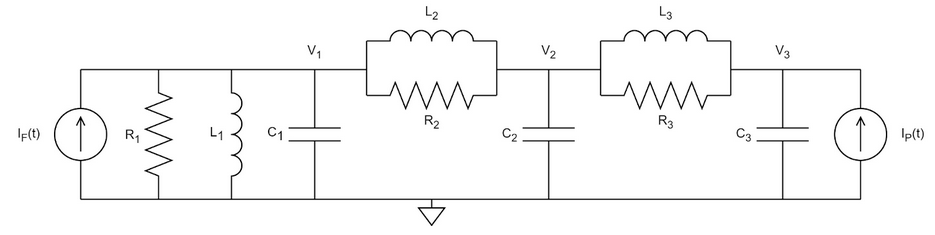
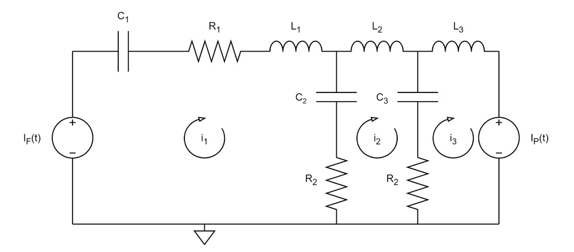
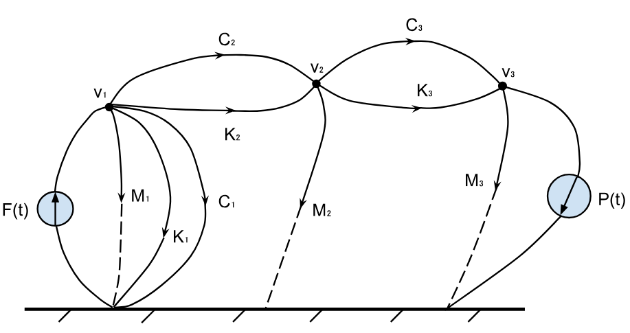
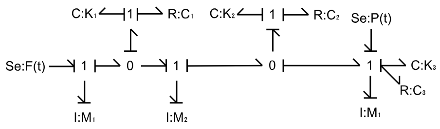
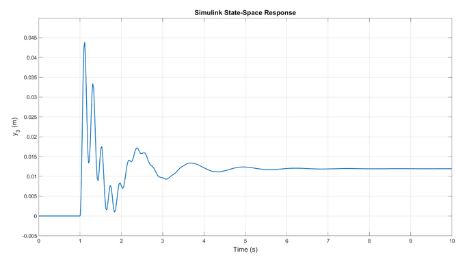
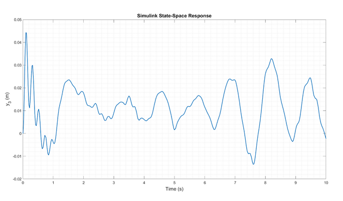

System Modelling of a Pantograph
Background
Pantographs are electro-mechanical assemblies placed on the rooftops of electric trains to collect electrical power from overhead wires. As a dynamic system, the pantograph must extend and collapse to maintain contact with the contact wire during train movement.
As the final project in a systems modelling and simulation course, I worked with group of students to model a train pantograph. A plethora of modelling techniques, including state-space, mathematical modelling, and analogous system representations were developed to represent the pantograph model in multiple domains. The system was also simulated in MATLAB and Simulink to determine model accuracy.
Modelling
Mechanical Model
Many models for the pantograph exist, but the lumped-mass model is widely used in industry due to its simplicity and fast-running simulations. (Duan, Dixon, and Stewart 2022) This model splits the pantograph into three masses: the lower frame m1 connected to the roof of the train, the upper frame m2, and the pantograph head m3, as shown in Fig. 1. Springs and dampers connect the masses. The force F(t) is the lifting force acting on the lower frame and P(t) is the contact pressure between the pantograph head and the contact wire. (Pan et al. 2023) (Guan et al. 2022)

This is a sixth order system on account of having six energy storage elements: three springs and three masses. Key assumptions included idealized components with no friction, time-invariance, and that the system was linear with no rotational elements, thus not requiring linearization. Values for the three masses; spring stiffnesses k1, k2, and k3; damper coefficients c1, c2, and c3; and forces F(t) and P(t) were chosen from the Faively CX pantograph, which is used on French high-speed trains and described in (Pombo, Antunes, and Ambrósio, n.d.).
Transfer Equation Model
Using Newton’s laws in differential form, three primary equations were derived to describe the mechanical system:
\[ \begin{align} m_1 \ddot{y}_1 + k_1 y_1 + c_1 \dot{y}_1 + k_2 (y_1 - y_2) + c_2 (\dot{y}_1 - \dot{y}_2) + F &= 0 \\ m_2 \ddot{y}_2 + c_3 (\dot{y}_2 - \dot{y}_3) + k_3 (y_2 - y_3) + k_2 (y_2 - y_1) + c_2 (\dot{y}_2 - \dot{y}_1) &= 0 \\ m_3 \ddot{y}_3 + c_3 (\dot{y}_3 - \dot{y}_2) + k_3 (y_3 - y_2) - P &= 0 \end{align} \] These equations represent the balance of forces that each mass experiences as a result of the springs, dampers, external forces, and the inertia of the mass itself. Due to the forces present, each mass also experiences displacement, which can be written in its differential forms as velocity and acceleration.
After taking the Laplace transform for these equations and algebraically combining them, the transfer equations can be written for the output Y3 given the inputs F(s) and P(s):
\[ \begin{align} \frac{Y_3}{F} &= \frac{(m_1s^2 + s(c_1 + c_2) + k_3 + k_2)(m_1s^2 + s(c_1 + c_2) + k_3 + k_2)(m_1s^2 + s(c_1 + c_2) + k_1 + k_2)}{(m_3s^2 + c_3s + k_3)((m_2s^2 + s(c_3 + c_2) + k_3 + k_2)(m_1s^2 + s(c_1 + c_2) + k_1 + k_2) - (c_3s + k_3)^2) - (c_3s + k_3)} \\ \frac{Y_3}{P} &= \frac{c_2s + k_2}{(m_3s^2 + c_3s + k_3)((m_2s^2 + s(c_3 + c_2) + k_3 + k_2)(m_1s^2 + s(c_1 + c_2) + k_1 + k_2) - (c_3s + k_3)^2) - (c_3s + k_3)} \end{align} \]
State-Space Model
A state-space model represents a system using the minimum number of state variables. For the pantograph system whose order is six, there are six state variables.
\[ \begin{align} let: x_1 = y_1 \\ x_2 = y_1' \\ x_3 = y_2 \\ x_4 = y_2' \\ x_5 = y_3 \\ x_6 = y_3' \\ \end{align} \] Substitutions are then done for the state variables in the primary mechanical equations and the resulting equations are then solved for the derivatives of each state variable. The complete state-space model is represented in matrix form as follows. The state variable of interest, i.e., the output of the system, is x5 which is the displacement of the pantograph head.
\[ \begin{bmatrix} \dot{x}_1 \\ \dot{x}_2 \\ \dot{x}_3 \\ \dot{x}_4 \\ \dot{x}_5 \\ \dot{x}_6 \end{bmatrix} = \begin{bmatrix} 0 & 1 & 0 & 0 & 0 & 0 \\ -\frac{(k_1 + k_2)}{m_1} & -\frac{(c_1 + c_2)}{m_1} & \frac{k_2}{m_1} & \frac{c_2}{m_1} & 0 & 0 \\ 0 & 0 & 0 & 1 & 0 & 0 \\ \frac{k_2}{m_2} & \frac{c_2}{m_2} & -\frac{(k_2 + k_3)}{m_2} & -\frac{(c_2 + c_3)}{m_2} & \frac{k_3}{m_2} & \frac{c_3}{m_2} \\ 0 & 0 & 0 & 0 & 0 & 1 \\ 0 & 0 & \frac{k_3}{m_3} & \frac{c_3}{m_3} & -\frac{k_3}{m_3} & -\frac{c_3}{m_3} \end{bmatrix} \begin{bmatrix} x_1 \\ x_2 \\ x_3 \\ x_4 \\ x_5 \\ x_6 \end{bmatrix} + \begin{bmatrix} 0 & 0 \\ -\frac{1}{m_1} & 0 \\ 0 & 0 \\ 0 & 0 \\ 0 & 0 \\ 0 & \frac{1}{m_3} \end{bmatrix} \begin{bmatrix} F \\ P \end{bmatrix} \\ \]
\[ y = \begin{bmatrix} 0 & 0 & 0 & 0 & 1 & 0 \end{bmatrix} \]
\[ D = \begin{bmatrix} 0 \end{bmatrix} \]
Other Model Representations
Force-Current Analogy
The force-current analogy allows an analogous system representation, replacing the mechanical parameters with an equivalent electrical comparison. This particular analogy is based on the principle that the flow of current in an electrical circuit is analogous to the flow of force in a mechanical system; force is analogous to current, and velocity is analogous to node voltage. Thus, the pantograph system has two current sources for the two forces, and three node voltages for the three velocities.

Force-Voltage Analogy
The force-voltage analogy is based on the principle that velocity is analogous to mesh currents, and force is analogous to voltage. Thus, there are two voltage sources for the two forces, and three mesh currents for the three velocities.

Linear Graph
Linear graphs are domain-independent graphical representations of a system model and the interconnection of its elements. The linear graph for the pantograph system was created using the force-current electrical analogy, where the three node voltages v1, v2, and v3 became the three hovering nodes. The dominating input force F(t) is drawn with its arrow pointing upwards into node 1 to indicate its input into the system via node v1. The input force P(t) is drawn with its arrow pointing to ground to indicate its role as a secondary force which the pantograph experiences as a result of F(t).

Bond Graph
Bond graphs are representations of the power flow through a dynamic system. As shown in Fig. 5, the bond graph of the pantograph system has two effort sources that provide power into the system. It also shows the causality or the direction of flow in the system. At a 1-junction, the flows sum to zero, and at a 0-junction, the efforts sum to zero.

Simulation and Discussion
Using MATLAB and Simulink, simulations were run for a number of the aforementioned models. For brevity, only the Simulink results are discussed below.
State-Space Simulink Results
Using the state-space matrices derived earlier, the Simulink state-space model was built. Initial states for all the state variable were set to zero. The inputs to the state-space block are the two forces F(t) and P(t), which are step inputs triggered at t = 1 second. This simulation provides a response to both inputs being applied at once. When run, the simulation indicated a maximum displacement of 4.5 cm during the transient response, before reducing to 1.2 cm at steady-state.

While beyond the scope of this project, the Simulink model was also run with non-constant input forces (with added random noise). This can be said to be a more realistic depiction of the pantograph system, since the forces are not constant as a train moves along the tracks.
As seen in Fig. 7, the system does not reach steady-state, instead having continuous oscillation with a mean amplitude around 1 cm and maximum displacement initially at 5 cm.

While being a simplification of a real-world pantograph system, this model’s performance was favourable. As a point of comparison, with a 66.7-133.4 N force between the pantograph and contact wire, a 2.54-7.62 cm displacement was noted. (“The Pantograph Barrier: Part 2 of 4 Effects & Consequences” 2018) Expanding on this model, it it would be interesting to explore the complex wire dynamics found with the catenary and contact wires. Especially as the movement of a pantograph creates a displacement wave travelling along the contact wire, and managing the speed of the displacement wave in relation to the train’s speed is important to ensure no loss of contact between the pantograph and contact wire.